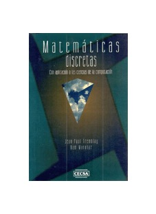

Matematicas discretas : con aplicacion a las ciencias de la computacion
Jean-Paul Tremblay, Ram Manohar ; tr. Raymundo Hugo Rangel Gutierrez

- Idioma: Spanish
- Autores: Tremblay, Jean-Paul, 1938-, autor
- Información de la publicación: México : CECSA, 1996
- Fecha de publicación: 1996
- Descripción física: 597 páginas
Ubicación |
Numero de Clasificación |
|---|---|
| Facultad de Estudios Superiores Aragón | QA39.2 T44 1996 |
| Facultad de Contaduría y Administración | |
| Facultad de Estudios Superiores Cuautitlán 1 | |
| Facultad de Ciencias | |
| Facultad de Ingeniería. Biblioteca "Enrique Rivero Borrell | |
| Instituto de Investigaciones Económicas | |
| Instituto de Matemáticas |
En el capítulo I se presenta las matrices que son utilizados en la resolución de sistemas de ecuaciones lineales, además su utilidad mayor en este campo es en la presentación de árboles y grafos que se hace mediante matrices. En el Capítulo II presenta Álgebra de Boole que permite presentar funciones con dos estados. En el Capítulo III se presenta Mapas de Karnaugh que permiten simplificar las funciones algebraicas. En el Capítulo IV Se tiene las técnicas de conteo las variaciones, permutaciones y combinaciones las cuales son parte de las Matemáticas Discretas que estudia las diversas formas de realizar agrupaciones con los elementos de un conjunto, formándolas y calculando su número. En el Capítulo V y en el Capítulo VI se presenta la teoría de grafos, árboles y sus aplicaciones, para nadie es novedad observar en la vida cotidiana: carreteras, líneas telefónicas, líneas de televisión por cable, el transporte colectivo metro, circuitos eléctricos de nuestras casas, automóviles, etc, las cuales tienen su representación gráfica como sus recorridos y sus soluciones mediante grafos y árboles. En el Capítulo VII se tiene autómatas de estado finito o máquinas de estado finito, es un modelo matemático de un sistema, herramienta muy útil para especificar aspectos relacionados con tiempo real, dominios reactivos o autónomos, computación reactiva, protocolos, circuitos y arquitecturas de software. Finalmente en el Capítulo VIII se presenta el fundamento de Lenguajes formales y lenguajes naturales, en matemáticas, lógica, y ciencias de la computación, un lenguaje formal es un conjunto de palabras (cadenas de caracteres) de longitud finita formadas a partir de un alfabeto (conjunto de caracteres) finito